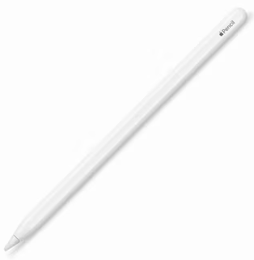
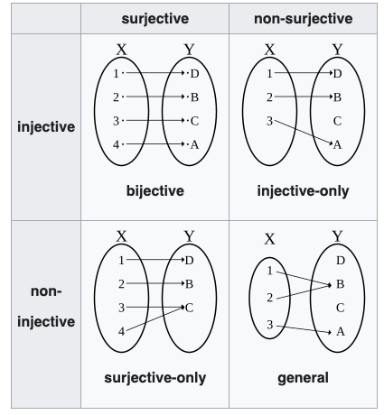
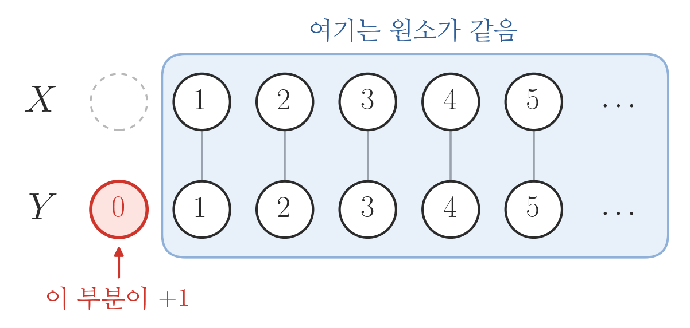

06wk-2: 카디널리티 (1)
1. 강의영상
2. 수학과에서 자주 쓰는
A. 수학과에서 자주 쓰는 기호
- 아래와 같은 기호들의 의미를 알고 있는가?
- \(\because\)
- \(\therefore\)
- 이처럼 수학에서는 특별한 의미를 가지는 몇 가지 기호가 있다.
- 아래는 특별한 의미를 가지는 수학기호들의 모음이다.
| 언어 | 기호 |
|---|---|
| for all | ∀ |
| exists | ∃ |
| such that, satisfying | s.t., st |
| if-then, implies | ⇒ |
| if and only if | ⇔ |
| quod erat demonstrandum | □, ■ |
# 예시1: 아래의 문장
“모든 실수 \(x\)에 대하여, \(x^2\)은 0 이상이다.”
을 다양하게 표현하여 보자.
(언어)
- for any \(x\) in \(\mathbb{R}\), \(x^2 \geq 0\).
- for arbitrary \(x \in \mathbb{R}\), \(x^2 \geq 0\).
- if \(x \in \mathbb{R}\), then \(x^2 \geq 0\).
(기호)
- \(\forall x \in \mathbb{R}\): \(x^2\geq 0\).
- \(\forall x \in \mathbb{R}\), \(x^2\geq 0\).
- \(x^2 \geq 0\), for all \(x \in \mathbb{R}\).
- \(x^2 \geq 0\), \(\forall x \in \mathbb{R}\).
- \(x \in \mathbb{R} \Rightarrow x^2 \geq 0\).
어떻게 쓰느냐에 대한 규칙은 없음. 거의 쓰는 사람 마음임. (그런데 뉘앙스는 조금씩 다름)
#
# 예시2: 이번에는
“\(\Omega\)의 임의의 부분집합 \(A\),\(B\)에 대하여, \(A=B\) 일 필요충분조건은 \(A\subset B\) 이고 \(B \subset A\) 이어야 한다.”
라는 문장을 다양하게 표현하여 보자.
(언어)
- For all \(A,B \subset \Omega\), \(A=B\) if and only if (1) \(A \subset B\) and (2) \(B \subset A\).
- Consider \(A,B \subset \Omega\). \(A=B\) if and only if (1) \(A \subset B\) and (2) \(B \subset A\).
(기호)
- \(A = B \Leftrightarrow A \subset B \text{ and } B \subset A, \forall A,B \subset \Omega\).
- \(A = B \Leftrightarrow \big(A \subset B \text{ and } B \subset A\big), \forall A,B \subset \Omega\).
- \(\forall A,B \subset \Omega\): \(A = B \Leftrightarrow \big(A \subset B \text{ and } B \subset A\big)\)
의미가 좀 모호해질 수도 있는데, “눈치껏” 알아 먹어야 한다.
#
B. 귀류법
- 귀류법: 니 논리대로면… <- 인터넷 댓글에 많음..
님 논리대로면.. (ref: 하이브레인넷)
- XXX가 문제 없으면 서울 전체가 문제가 없고 (애초에 서울은 문제도 아니라는데 왜 이소리는 하고 계신지 모르겠지만)
- 수도권 모 대학이 문제가 없으면 전체가 문제가 없겠네요?
- 지방도 1개 대학이 문제가 없으니 전체가 문제 없겠네요? 와우! 모든 문제가 해결되었습니다! 출산율 감소로 인한 한국대학의 위기가 해결되었.. 아니 애초에 위기가 없었군요!. 어휴.. ㅠㅠ
- 섀도복싱
- 상대가 없는 허공에 대고 샌드백 없이 권투 연습을 하는 것.
- 인터넷 상에서는 혼자서 허공에 대고 공격한다는 의미로 사용되고 있음. 어휘의 원래 뜻과 마찬가지로 아무도 뭐라 하지 않았는데 혼자 가상의 공격 상대를 만들어 놓고 비판하거나 욕하는 모습을 표현할 때 많이 쓰임. (출처: 나무위키)
# 기습질문 – (지난시간의 난제) 바늘이 하나 있는 시계에서, 바늘을 랜덤으로 돌려서 딱 6시에 멈출 확률이 0이어야 하는 이유?
(풀이)
아래와 같이 주장하는 상대가 있다고 가정하자. (섀도복싱을 위한 가상의 상대 설정)
어떤사람: \(P(\{\pi\})\)는 0이 아니에요.
이 사람의 주장이 맞다고 생각하자. 이 주장은 아래와 같이 볼 수 있다.
어떤사람: \(P(\{\pi\})=a\)이다. 단 \(0<a<1\).
그 사람의 주장대로라면 아래가 성립한다.
- \(P(\{\pi\})=a\)
- \(P(\{\pi/2\})=a\) // 6시에 바늘이 정확하게 설 확률이 \(a\)이면 3시에 바늘이 정확하게 설 확률도 \(a\)니까
- \(P(\{\pi/3\})=a\)
- \(P(\{\pi/4\})=a\)
- …
그러면 아래가 성립한다.
\[P(\{\pi\}\cup \{\pi / 2\} \cup \dots)=P(\{\pi\})+P(\{\pi / 2\})+\dots=\infty \times a > 1\] 따라서 그 어떤사람은 사실 확률이 1보다 크다는 사실을 주장한 셈이다. 이는 모순이다. 따라서 \(P(\{\pi\})=0\)이다.
C. 추상화(일반화)
- 연필이란? 필기도구의 하나. 흑연과 점토의 혼합물을 구워 만든 가느다란 심을 속에 넣고, 겉은 나무로 둘러싸서 만든다. 1565년에 영국에서 처음으로 만들었다. (출처: 네이버국어사전)
# 질문: 아래는 연필인가?

- 새로운 개념을 적용해야 하는 어떠한 일이 있을 때, 사람들은 익숙한 정의에서 확장을 하기를 원한다. 확장을 하는 방식은 익숙한 정의에 의해 파생되는 성질을 이용하여 (혹은 성질들을 조합하여), “마치 정의처럼” 쓰는 것이다.
- 수학에서는 약속에 의하여 성질이 생기고, 그 성질로부터 확장된 약속이 생기는 것은 매우 흔한 일이다.
- 리처드 파인만: “수학자들은 가급적 일반적인 추론을 선호합니다.” (2:28부터)
- 일반화된 이론의 특징1: 더 많은 걸 설명한다.
- 일반화된 이론의 특징2: 특수한 상황을 안아(?)준다.
3. Size와 Cardinality
- 집합 \(A\)의 cardinality는 집합에 들어있는 “원소의 수”를 좀 더 일반화한 개념이다. 집합 \(A\)가 유한집합일 경우는 우리에게 익숙한 size의 개념을 그대로 사용하면 된다. 예를 들어 집합 \(A = \{2,3,4\}\) 일 경우는
\[\text{cardinal number of } A := |A| = 3\]
와 같이 사용하면 된다. 만약에 집합 \(A\)가 무한집합이라면 그 동작원리가 조금 복잡하다.
- 오늘의 목표: 집합의 size개념을 일반화하자! (그래서 카디널리티라는 개념을 만들자)
- 익숙한 개념: 두 집합 \(A\),\(B\)의 size 비교 (단, \(A\)와 \(B\)는 유한집합)
- 파생되는 성질: 두 집합 \(A\), \(B\)사이에 전사, 단사, 전단사 함수가 존재할 때 size 비교?
- 개념의 확장: 두 집합 \(A\),\(B\)의 cardinality 비교 (이때 \(A\)와 \(B\)는 무한집합일 수도 있음)
A. 전사/단사/전단사
- 용어 정리
- injective = one-to-one = 단사 = 일대일 함수
- surjective = onto = 전사 = 위로의 함수
- bijective = one-to-one and onto, one-to-one correspondence = 전단사 = 일대일 대응
- ref: https://en.wikipedia.org/wiki/Bijection,_injection_and_surjection

- 따지는 방법
- 단사: 함수 \(f\)는 \(X\)에서 \(Y\)로 향하는 단사함수이다. \(\Leftrightarrow\) \(\forall x_1,x_2 \in X\): \(x_1\neq x_2 \Rightarrow f(x_1)\neq f(x_2)\)
- 전사: 함수 \(f\)는 \(X\)에서 \(Y\)로 향하는 전사함수이다. \(\Leftrightarrow\) \(\forall y \in Y ~\exists x \in X\) such that \(f(x)=y\).
- 성질1: 어떤 함수가 전사함수 & 단사함수 \(\Leftrightarrow\) 전단사함수
- 성질2:
- 집합 \(X\)에서 집합 \(Y\)로 가는 단사함수 \(f\)가 존재한다. \(\Rightarrow\) \(|X| \leq |Y|\)
- 집합 \(X\)에서 집합 \(Y\)로 가는 전사함수 \(f\)가 존재한다. \(\Rightarrow\) \(|X| \geq |Y|\)
- 성질1~2로 유추하면 아래와 같은 사실을 주장할 수 있지 않을까?
- 집합 \(X\)에서 집합 \(Y\)로 향하는 전단사함수가 존재한다 \(\Rightarrow\) \(|X|=|Y|\)
- 확장된 정의: 두 집합 \(X\), \(Y\)를 고려하자. \((\star\star\star\star\star)\)
- \(|X|\leq |Y|\) \(\Leftrightarrow\) \(X\)에서 \(Y\)로 향하는 단사함수가 존재한다.
- \(|X|\geq |Y|\) \(\Leftrightarrow\) \(X\)에서 \(Y\)로 향하는 전사함수가 존재한다.
- \(|X|=|Y|\) \(\Leftrightarrow\) \(X\)에서 \(Y\)로 향하는 전단사함수가 존재한다.
B. 두 집합의 카디널리티 비교
# 예제1
집합 \(X=\{1,2,3\}\), \(Y=\{2,4,6\}\)을 생각하자. 적당한 함수 \(f\)를 아래와 같이 정의하자.
- \(f(1)=2\)
- \(f(2)=4\)
- \(f(3)=6\)
함수 \(f\)의 성질을 체크해보자.
- (단사) \(\forall x_1,x_2 \in X\): \(x_1\neq x_2\) \(\Rightarrow\) \(f(x_1)\neq f(x_2)\).
- (전사) \(\forall y \in Y~ \exists x \in X\) such that \(f(x)=y\).
함수 \(f\)는 전단사 함수이다. 집합 \(X\)에서 집합 \(Y\)로 가는 전단사 함수가 존재하므로 집합 \(X\)와 집합 \(Y\)의 카디널리티는 동일하다.
사실 직관적으로 \(f\)는 전단사임을 알 수 있는데, 좀 더 기호에 익숙해지기 위해서 아래의 조건을 엄밀하게 따져보자.
- (단사) \(\forall x_1,x_2 \in X\): \(x_1\neq x_2\) \(\Rightarrow\) \(f(x_1)\neq f(x_2)\).
- (전사) \(\forall y \in Y~ \exists x \in X\) such that \(f(x)=y\).
단사를 체크하자.
| case | \(x_1\) | \(x_2\) | \(f(x_1)\) | \(f(x_2)\) |
|---|---|---|---|---|
| \(\color{gray}{1}\) | \(\color{gray}{1}\) | \(\color{gray}{1}\) | \(\color{gray}{2}\) | \(\color{gray}{2}\) |
| 2 | \(1\) | \(2\) | \(2\) | \(4\) |
| 3 | \(1\) | \(3\) | \(2\) | \(6\) |
| 4 | \(2\) | \(1\) | \(4\) | \(2\) |
| \(\color{gray}{5}\) | \(\color{gray}{2}\) | \(\color{gray}{2}\) | \(\color{gray}{4}\) | \(\color{gray}{4}\) |
| 6 | \(2\) | \(3\) | \(4\) | \(6\) |
| 7 | \(3\) | \(1\) | \(6\) | \(2\) |
| 8 | \(3\) | \(2\) | \(6\) | \(4\) |
| \(\color{gray}{9}\) | \(\color{gray}{3}\) | \(\color{gray}{3}\) | \(\color{gray}{6}\) | \(\color{gray}{6}\) |
\(x_1 \neq x_2\) 라는 조건이 있으므로, 위에서 case 1,5,9 는 고려하지 않아도된다. case 2,3,4,6,7,8 에서는 (즉 \(x_1\neq x_2\)에서는) 항상 두 함수값 \(f(x_1),f(x_2)\)이 다르므로 \(\forall x_1,x_2 \in X\): \(x_1\neq x_2\) \(\Rightarrow\) \(f(x_1)\neq f(x_2)\).
전사를 체크하자. (아래 표에서 \(\exists x?\) 는 \(f(x)=y\)를 만족하는 \(x\)가 존재하는가를 뜻한다.)
| case | \(y\) | \(f(x)=y\) | \(\exists x?\) |
|---|---|---|---|
| 1 | \(2\) | \(f(x)=2\) | \(x=1\) |
| 2 | \(4\) | \(f(x)=4\) | \(x=2\) |
| 3 | \(6\) | \(f(x)=6\) | \(x=3\) |
따라서 \(\forall y \in Y~ \exists x \in X\) such that \(f(x)=y\).
#
# 예제2
집합 \(X=\{1,2,3,\dots \}\), \(Y=\{0,1,2,\dots \}\)을 생각하자. 함수 \(f\)를 아래와 같이 정의하자.
- \(f(1)=0\)
- \(f(2)=1\)
- \(f(3)=2\)
- \(\dots\)
함수 \(f\)의 성질을 체크해보자.
- (단사) \(\forall x_1,x_2 \in X\): \(x_1\neq x_2\) \(\Rightarrow\) \(f(x_1)\neq f(x_2)\)
- (전사) \(\forall y \in Y~ \exists x \in X\) such that \(f(x)=y\).
함수 \(f\)는 전단사함수이다. 집합 \(X\)에서 집합 \(Y\)로 가는 전단사 함수가 존재하므로 집합 \(X\)와 집합 \(Y\)의 카디널리티는 동일하다.1
#
- \(\aleph_0\)의 정의: 자연수 집합의 카디널리티 (최소의 무한 기수)를 \(\aleph_0\)이라고 정의한다. 즉
\[|\mathbb{N}|=\aleph_0\]
이다.
- 놀라운 사실1:
- 음이 아닌 정수의 집합 \(\mathbb{N} \cup \{0\}\)의 카디널리티 역시 \(\aleph_0\)이다.
- 놀라운 사실2:
- 자연수집합은 음이 아닌 정수집합의 진 부분집합인데, 카디널리티가 같다. 즉 \(A \subsetneq B\) 인데, \(|A|=|B|\) 인 상황.
- 즉 무한집합의 경우, 본인과 카디널넘버가 같은 진 부분집합이 존재할 수 있다. (유한집합에서는 불가능하겠지)
깨알같이 소개하는 무한집합의 정의:
집합 \(A\)가 무한집합이다. \(\Leftrightarrow\) \(A\)와 동일한 카디널리티를 가지는 \(A\)의 진 부분집합이 존재한다.
# 예제3
집합 \(X=\{1,2,3,\dots \}\), \(Y=\{2,4,6,\dots \}\)을 생각하자. 함수 \(f\)를 아래와 같이 정의하자.
- \(f(1)=2\)
- \(f(2)=4\)
- \(f(3)=6\)
- \(\dots\)
함수 \(f\)의 성질을 체크해보자.
- (단사) \(\forall x_1,x_2 \in X\), \(x_1\neq x_2\) \(\Rightarrow\) \(f(x_1)\neq f(x_2)\)?
- (전사) \(\forall y \in Y~ \exists x \in X\) such that \(f(x)=y\).
1과 2이 모두 성립하므로 함수 \(f\)는 전단사함수이다. 집합 \(X\)에서 집합 \(Y\)로 가는 전단사 함수가 존재하므로 집합 \(X\)와 집합 \(Y\)의 카디널리티는 동일하다.
언뜻 생각하면 \(|Y| = |X| + 1\) 과 같은 관계가 성립할 것 같다.

그렇지만 그렇지 않다. \(f(x)=x-1\) 로 정의한 함수 \(f\)가 \(X\)에서 \(Y\)로 가는 전단사함수이기 때문이다.
- (단사) 임의의 \(x_1, x_2 \in X\)에 대하여 \(x_1 \neq x_2\) 이면 \(f(x_1)=x_1-1 \neq x_2-1=f(x_2)\) 이므로 단사이다.
- (전사) 임의의 \(y \in Y\)에 대하여 \(x=y+1\) 로 두면 \(x \in X\) 이고 \(f(x)=y\) 이므로 전사이다.
따라서 \(f\)는 전단사함수이고, \(|X|=|Y|\) 이다.
#
Footnotes
살짝 어질어질하죠?↩︎